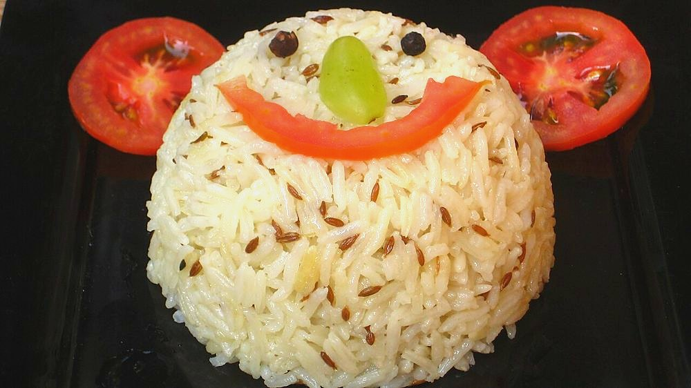

Contains: milk
Ingredients
Quantities for 4.
- 300g, rinsed and soaked 20 minutes Basmati Rice
- 2 tsp Cumin Seeds
- 3 tbsp Ghee
- 1 Bay Leafoptional
- 1 small piece Cinnamonoptional
- 3 Clovesoptional
- a little, chopped Coriander Leavesoptional
- to taste Salt
Cookware
stovetop
Checked against the ingredient list for ten allergens: milk, egg, fish, crustaceans, tree nuts, peanuts, sesame, mustard, soy and gluten. Brands vary, so read the label on anything new to you.
Before you start
- Soaking is not optional for basmati. Twenty minutes lets the grain absorb water evenly so it lengthens instead of breaking.
- Drain the soaked rice properly. Wet rice going into hot ghee spits and steams.
Method
- Rinse the rice until the water runs clear, then soak 20 minutes and drain well.
- Heat the ghee, add the whole spices and let the cumin darken by a shade and smell toasted.A shade darker, no more. Burnt cumin is bitter and cannot be rescued.
- Add the drained rice and turn it gently in the ghee for 2 minutes until every grain is coated.
- Pour in 540ml hot water, add salt, and bring to a hard boil.Hot water, not cold. Cold water stalls the pan and the grains cook unevenly.
- Cover, drop to the lowest heat and cook 12 minutes without lifting the lid.
- Rest 10 minutes off the heat, then fork through with the coriander.The rest is when the grains firm up. Forking too early breaks them.
Storage
Keeps 2 days refrigerated. Reheat with a sprinkle of water under a lid, or fry in a little ghee. Cool leftover rice quickly and refrigerate within the hour.
Nutrition Low estimate
Low protein: 6 g a serving, 6% of the calories
| Per serving87 g | Per 100 g | |
|---|---|---|
| Calories | 367 kcal | 422 kcal |
| Protein | 5.8 g | 7 g |
| Carbohydrate | 61.1 g | 70 g |
| of which sugars | 0.1 g | 0 g |
| Fibre | 1.2 g | 1 g |
| Fat | 10.6 g | 12 g |
| of which saturated | 6.1 g | 7 g |
| of which unsaturated | 3.9 g | 4 g |
Ingredients given to taste count as zero, so the real figures run a little higher. Estimated from raw ingredients using USDA FoodData Central.
More like this: Quick Indian recipes (30 min) · Vegetarian Indian recipes · Gluten-free Indian recipes · No onion no garlic recipes · Punjabi recipes
Times, yields, allergens and nutrition are guidance. Use your own judgement on doneness and on storing. More in About.